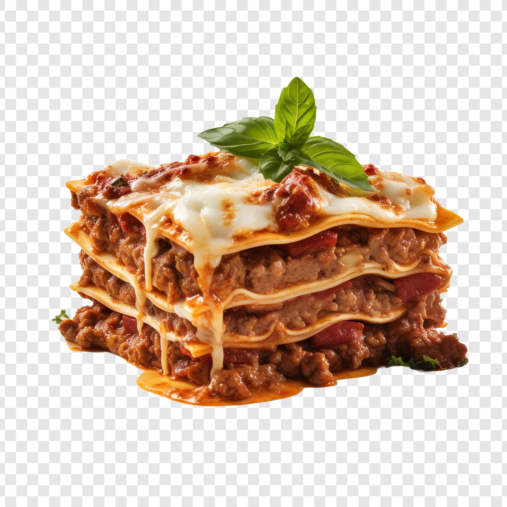

Lasagna
Back to Recipes

Description
Lasagna is a classic Italian dish made with layers of pasta, meat, cheese, and tomato sauce.
Ingredients
- Lasagna noodles
- Ground beef
- Ricotta cheese
- Mozzarella cheese
- Parmesan cheese
- Tomato sauce
- Garlic
- Onion
- Olive oil
- Salt and pepper
Steps
- Preheat the oven to 375°F (190°C).
- Cook the lasagna noodles according to package instructions.
- In a skillet, heat olive oil and sauté garlic and onion until translucent.
- Add ground beef and cook until browned. Drain excess fat.
- Add tomato sauce, salt, and pepper. Simmer for 10 minutes.
- In a baking dish, layer noodles, meat sauce, ricotta cheese, mozzarella cheese, and Parmesan cheese.
- Repeat layers until all ingredients are used, finishing with mozzarella and Parmesan on top.
- Bake for 30-40 minutes or until cheese is bubbly and golden brown.
- Let it cool for 10 minutes before serving.